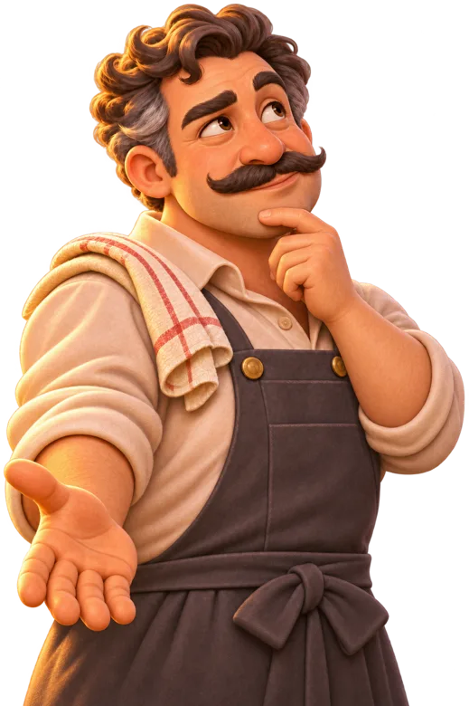
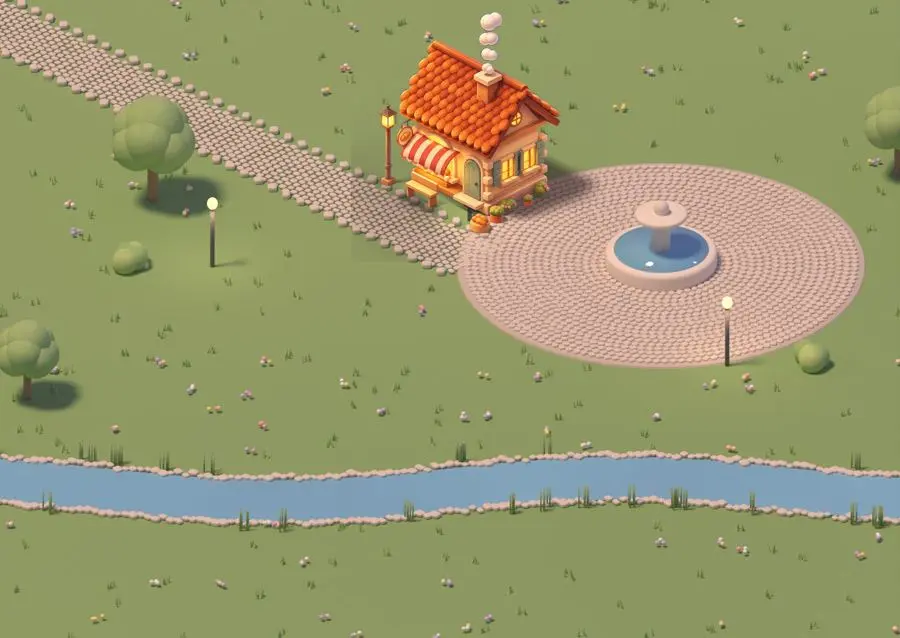
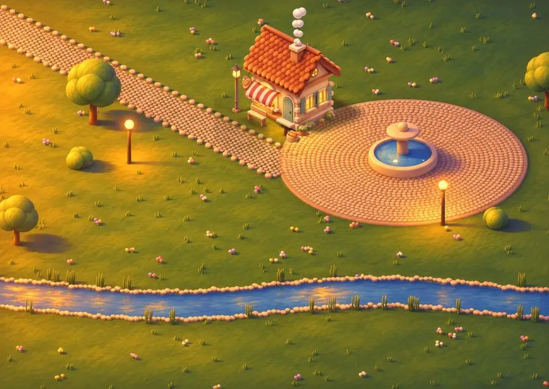

Una bottega di giochi.A game workshop.
Tesdev è un piccolo studio italiano. Ci piacciono i giochi che si possono tenere in tasca e riprendere dopo cena.Tesdev is a small Italian studio. We like games you can keep in your pocket and pick up again after dinner.
Ogni pezzo del paese di Lamplight Town nasce in 3D e poi viene ridipinto, finché la luce del tramonto non sembra vera.Every piece of Lamplight Town starts in 3D and is then repainted, until the sunset light feels real.

Come nasce un pezzo di paeseHow a piece of town is made

